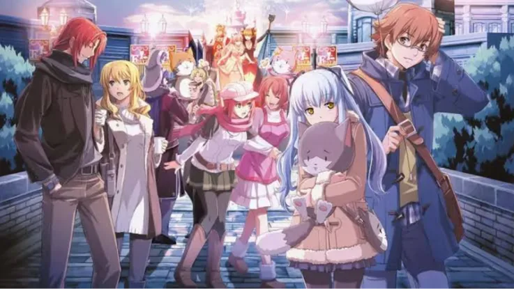

Luiso · 27 de septiembre de 2026 · 2 min de lectura
El futuro de The Legend of Heroes: Trails podría volver a mirar hacia Crossbell.
En una entrevista publicada por Weekly Famitsu, Toshihiro Kondo, presidente de Nihon Falcom, habló sobre los próximos proyectos de la compañía y reveló que algunos desarrolladores veteranos quieren trabajar nuevamente en Trails from Zero y Trails to Azure.
La idea tendría además un componente personal: varios de los desarrolladores que participaron en los primeros juegos de la saga se acercan a su retiro y habrían expresado su deseo de regresar a Crossbell como uno de sus últimos proyectos.
Kondo aseguró que escuchar esa intención lo hizo muy feliz y que Falcom quiere realizar esos remakes eventualmente.
Hay que remarcar una diferencia importante: esto no significa que los remakes estén actualmente en producción.
Falcom todavía tiene varios proyectos pendientes y el orden de sus próximos juegos no está definido.
La compañía trabaja en el capítulo final de la actual historia de Trails beyond the Horizon, mientras también analiza qué hacer con Trails in the Sky the 3rd.
El tamaño relativamente reducido del equipo de desarrollo también limita la cantidad de grandes juegos de Trails que Falcom puede producir simultáneamente.
Por eso, Trails from Zero y Trails to Azure aparecen actualmente como una posibilidad que la compañía quiere explorar, no como anuncios oficiales.
Los dos juegos cuentan la historia de la Special Support Section de Crossbell y funcionan como puente entre las historias de Liberl y Erebonia.
Aunque ya recibieron versiones modernas y localizaciones oficiales en Occidente, un remake completo permitiría reconstruirlos utilizando las herramientas y estándares actuales de Falcom.
Además, Falcom ya está avanzando con los remakes de Trails in the Sky, por lo que el regreso a Crossbell sería una continuación natural del proceso.
Por ahora, la gran incógnita es si Falcom decidirá avanzar primero con Trails in the Sky the 3rd o saltar directamente hacia Zero y Azure.